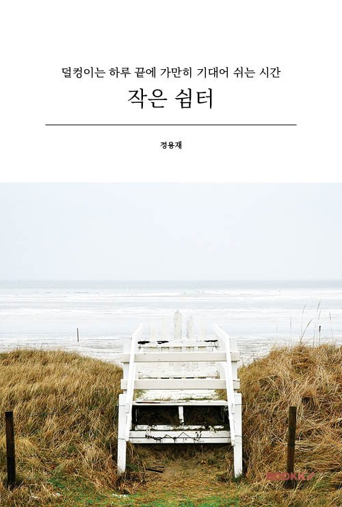
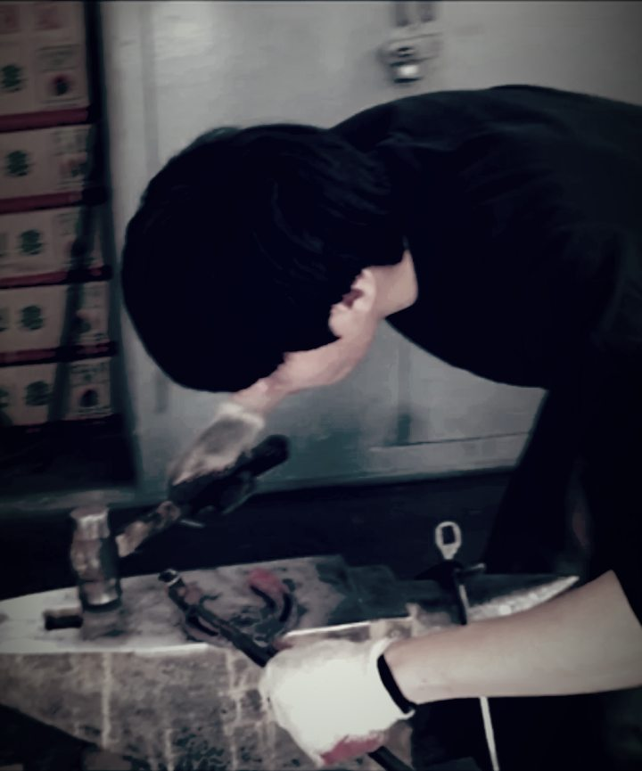
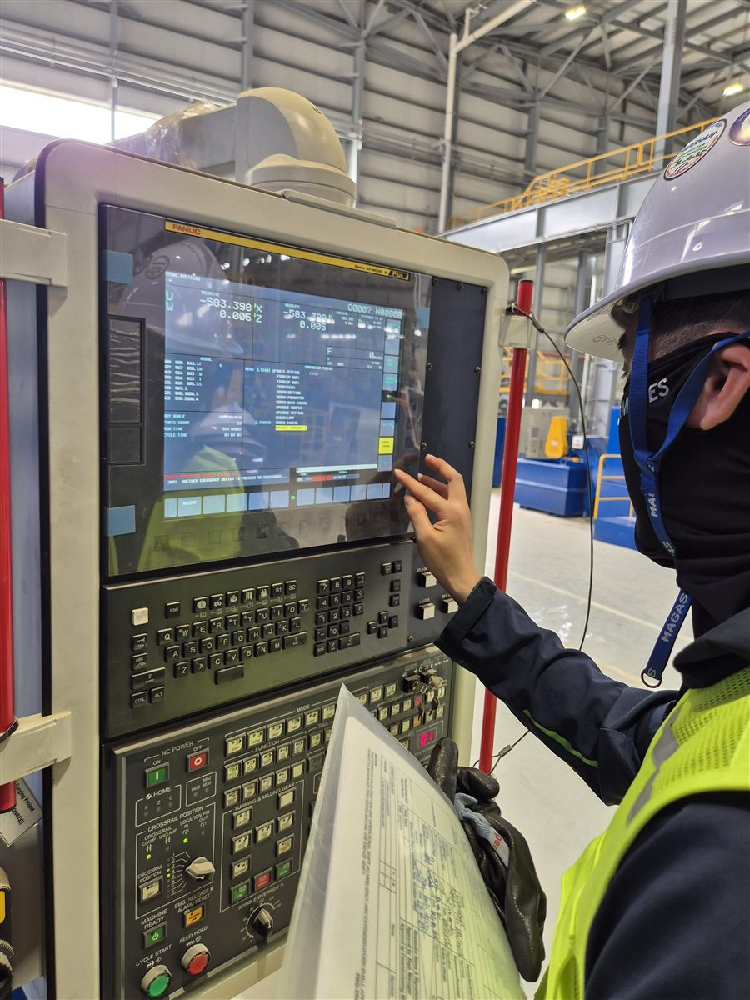
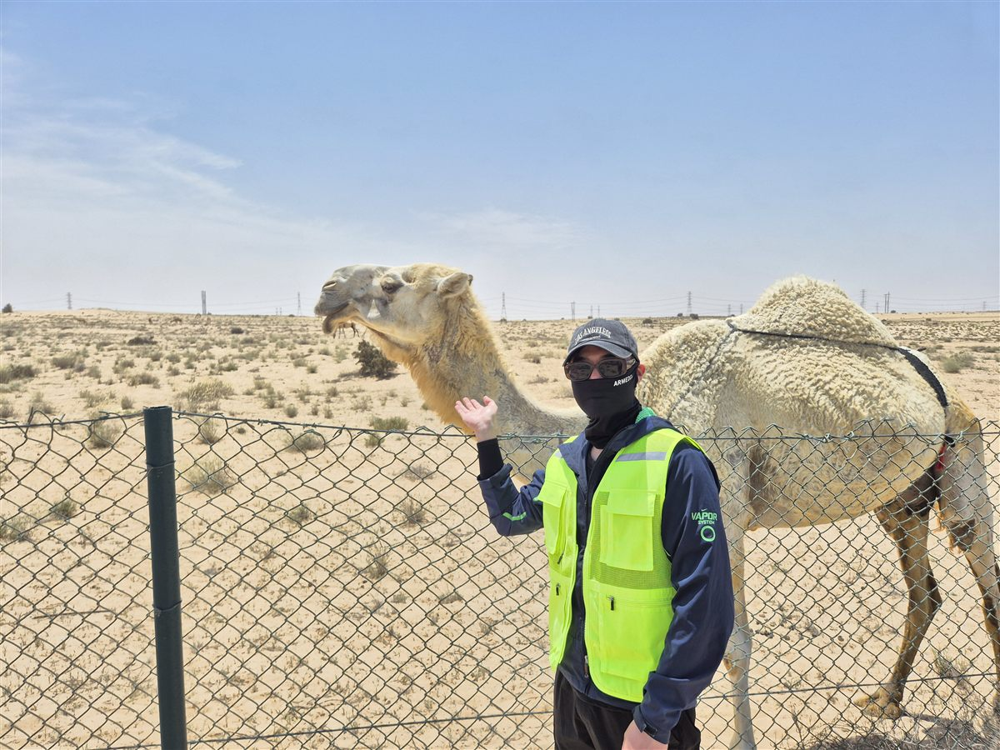

시집 · · 부크크 출간
작은 쉼터
덜컹이는 하루 끝에 가만히 기대어 쉬는 시간
부크크에서 보기세상의 보폭이 너무 빠르고 버겁게 느껴질 때, 억지로 남들의 걸음에 맞추려다 숨이 턱 끝까지 차오를 때, 우리에게는 잠시 멈춰 가만히 숨을 고를…
소개
여러 스마트 팩토리·제조 시스템 프로젝트에 참여했고, 해외 현장에서는 PL도 맡았습니다. 그렇게 현장과 시스템을 함께 이해하며 문제를 풀어 왔습니다.
설계하고 개발할 때는 현장에서 생길 수 있는 예외 상황까지 미리 생각합니다. 현장 운영자와 함께 맞춰 가며, 안정적이고 효율적으로 돌아가는 시스템을 만드는 것이 제 강점입니다.
C#과 Java로 I/F, 모니터링, DAS, POP, WMS, MES 같은 제조 IT 시스템을 만들어 왔습니다. 데이터는 Oracle·MS-SQL·RTDB(Historian)에서 쿼리와 프로시저로 다룹니다.
설비 쪽에서는 KEPServer로 PLC 데이터를 받아 실시간으로 모으고, Intouch HMI 공장 화면과 모니터링 프로그램으로 보여 줍니다. SAP ABAP을 이해하고 자격증도 있어, ERP와 현장을 잇는 일도 할 수 있습니다. Claude 자격증을 딴 뒤로는 AI 도구를 업무 분석과 문서화에 쓰고 있습니다.
나의 이야기
저는 장제사였습니다. 2017년 한국마사회에서 장제를 배워 자격을 얻었고, 과천 경마장에서 말의 발굽을 다듬고 뜨겁게 달군 편자를 몇 번이고 두드려 한 마리 한 마리의 발에 꼭 맞췄습니다. 편자가 꼭 맞으면 말은 한결 편하게 걷습니다. 그곳에서 작은 차이 하나도 그냥 넘기지 않는 법을 배웠습니다.
지금은 개발자로 일합니다. 손에 든 것은 망치에서 키보드로 바뀌었지만, 하는 일은 많이 닮았습니다. 현장의 흐름을 가만히 살피고, 작은 어긋남부터 하나씩 바로잡아, 일하는 사람이 한결 편하게 움직이도록 맞춰 갑니다.
말에게 꼭 맞는 편자처럼, 현장에 꼭 맞는 시스템을 만들고 싶습니다.



일 밖의 저

시집 · · 부크크 출간
덜컹이는 하루 끝에 가만히 기대어 쉬는 시간
부크크에서 보기세상의 보폭이 너무 빠르고 버겁게 느껴질 때, 억지로 남들의 걸음에 맞추려다 숨이 턱 끝까지 차오를 때, 우리에게는 잠시 멈춰 가만히 숨을 고를…
10년 가까이, 틈틈이 떠오른 마음을 시로 적어 왔습니다. 바쁜 하루 사이사이 메모처럼 모아 둔 문장들이 어느새 한 권 분량이 되어, 2026년 6월 시집 『작은 쉼터』로 묶었습니다.
읽는 분께도 잠깐 기대어 쉬어 가는 자리가 되면 좋겠습니다.